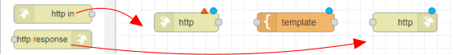
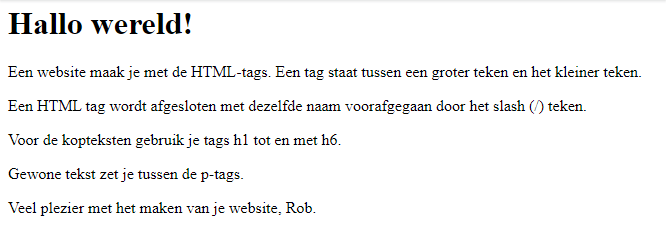

Website bouwen met Node-RED
We gaan een website maken met Node-RED. De website werkt alleen op het WiFi-netwerk waar we op zijn aangesloten. Dit betekent dat we de website alleen kunnen bekijken als we met onze computer of telefoon verbonden zijn met het WiFi-netwerk. Tijdens het maken van de website leer je ook werken met HTML-code. HTML is een soort taal waarmee we websites kunnen maken.
Contents
Wat je nodig hebt
- Een Raspberry Pi 3B+ met het besturingssysteem Ubuntu Server 22.04.
- Docker, Portainer en Node-RED zijn geinstalleerd.
- Een SSH verbinding met de Raspberry Pi vanuit je laptop.
Wat je gaat doen
- Stap 1: Introductie tot Node-RED en een "Hallo wereld!" voorbeeld.
- Stap 2: Adressen en telefoonnummers tabel voorbeeld.
- Stap 3: Personaliseer je website.
Stap 1: Introductie tot Node-RED en een "Hallo wereld!" voorbeeld
Je hebt 3 knooppunten (nodes) nodig om een eenvoudige website te maken:
- http in
- template (staat in functie, 1 sectie hoger)
- http response
Met "http in" vertel je hoe mensen naar een specifieke pagina op je website kunnen gaan. De pagina is te vinden op het adres IPadresraspberrypi:1880/naam\pagina. "http response" zorgt ervoor dat de pagina er mooi uitziet door middel van iets watHTML-code heet. In "template" kun je zien hoe de HTML-code eruit ziet.
Voer de volgende stappen uit:
Sleep de knooppunten (nodes) naar je werkblad (canvas). Zie ook Inleiding NodeRed van Eelco Dijkstra.

Verbind de knooppunten met de muis aan elkaar. Steeds een eindpunt met een beginpunt. Als je alle knooppunten aan elkaar hebt geplakt, heb je een "Flow". Dit is een soort programma.
Dubbelklik op het
http inknooppunt en geef als URL op:/hallo.Dubbelklik op template en tik
<h1>Hallo wereld!</h1>op de eerste regel van het veld "template".
Klik op de knop "Deploy" boven aan rechts om de code te maken voor je website.

Typ in de zoekbalk van je internet browser:
IP_adres_Raspberry_Pi:1880/hallo. Als alles goed is gegaan, zie je 'Hallo wereld!' in vette letters verschijnen op het scherm.
Voeg meer tekst toe aan de website door ze tussen de
<p>en</p>tags te zetten.
Stap 2: Werken met API's
Een API is een manier voor computers om met elkaar te praten en informatie uit te wisselen. Ze doen dit door verzoeken en antwoorden uit te wisselen. JSON is een manier om informatie op te slaan en uit te wisselen die zowel door computers als door mensen begrepen wordt.
Zo is er de website Dogs die steeds de URL van een ander plaatje van een hand geeft als JSON-object:
{
"status":"success",
"message":"https://images.dog.ceo/breeds/segugio-italian/n02090722_002.jpg"
}Er is een website die een link geeft naar willekeurige foto's van honden. Als je op de website klikt, krijg je een plaatje van een willekeurige hond te zien. Dit doe je door deze code te gebruiken: <img src="{{payload}}.message">
Je moet ook deze code gebruiken om een echte website te maken:
<!DOCTYPE html>
<html>
<head>
<title>Dogs</title>
</head>
<body>
<img src="{{payload}}.message">
</body>
</html>In de <head> sectie kun je de titel van je website kiezen. In de <body> sectie kun je de website zelf opbouwen.
Klik hier voor een lijst met API's.
Voer de volgende stappen uit:
Sleep de volgende knooppunten naar je werkblad
http inhttp requesttemplatehttp responsedebug
http requestgebruiken we om een verbinding met de honden website te maken en het JSON object op te halen.Verbind de knoopunten zoals in het plaatje staat weeregegeven:
Geef voor
http inde volgende url op:/toon.Geef in `http request de url van de API op:
Plaats in het template de HTML-code voor de website:
{kind=link}
<!DOCTYPE html>
<html>
<head>
<title>Bootstrap Example</title>
<meta charset="utf-8">
<meta name="viewport" content="width=device-width, initial-scale=1">
<link rel="stylesheet" href="https://maxcdn.bootstrapcdn.com/bootstrap/3.4.1/css/bootstrap.min.css">
<script src="https://ajax.googleapis.com/ajax/libs/jquery/3.6.1/jquery.min.js"></script>
<script src="https://maxcdn.bootstrapcdn.com/bootstrap/3.4.1/js/bootstrap.min.js"></script>
</head>
<body>
<div class="container">
<button onclick="location.reload();">Volgende plaatje</button>
<h1 style="text-align:center">Mijn Eerste Hondenpagina</h1>
<img src="{{payload.message}}" width="100%"/>
</div>
</body>
</html>- Test het resultaat in de browser:
IP_adres_raspberry_pi:1880/toon.
Stap 3: Personaliseer je website
Tegenwoordig moet je website in elke omstandigheid er goed uitzien. Bootstrap is een populaire manier om websites en web-apps te maken. Het maakt het makkelijker voor ontwikkelaars om mooie en goed werkende dingen te maken door hen te voorzien van een verzameling van dingen die ze kunnen gebruiken:
<!DOCTYPE html>
<html>
<head>
<title>Bootstrap Example</title>
<meta charset="utf-8">
<meta name="viewport" content="width=device-width, initial-scale=1">
<link rel="stylesheet" href="https://maxcdn.bootstrapcdn.com/bootstrap/3.4.1/css/bootstrap.min.css">
<script src="https://ajax.googleapis.com/ajax/libs/jquery/3.6.1/jquery.min.js"></script>
<script src="https://maxcdn.bootstrapcdn.com/bootstrap/3.4.1/js/bootstrap.min.js"></script>
</head>
<body>
<div class="container">
<button onclick="location.reload();">Volgende plaatje</button>
<h1 stype="text-align:center;">Mijn Honden Pagina</h1>
<img src="{{payload.message}}" width="100%" />
</div>
</body>
</html>Samenvatting
We gaan een website maken met Node-RED. We moeten hiervoor onze computer of telefoon verbinden met ons WiFi-netwerk. Tijdens het maken van de website leren we ook werken met HTML-code. De taal waarmee we websites maken. We moeten ervoor zorgen dat we een verbinding hebben met de Raspberry Pi en dat er bepaalde programma's geinstalleerd zijn. We gaan stap voor stap de website maken, de eerste stap is om een "Hallo wereld!" voorbeeld te maken. We gebruiken hiervoor 3 nodes en we verbinden deze met elkaar. Tenslotte drukken we op de knop "Deploy". Als alles goed is gegaan, kun je in de browser IP_adres_Raspberry_Pi:1880/hallo intypen en zie je "Hallo wereld" verschijnen.
Stap 1: Introductie tot Node-RED en een "Hallo wereld!" voorbeeld
Wat is Node-RED en waarom is het handig om te gebruiken? Hoe installeer je Node-RED op je computer? Laten we een eenvoudige "Hallo wereld!" website maken met Node-RED Oefening: probeer zelf een andere zin te maken in je "Hallo wereld!" website.
Stap 2: Adressen en telefoonnummers tabel
Laten we een tabel maken met adressen en telefoonnummers Hoe voeg je nieuwe rijen toe aan de tabel? Oefening: probeer zelf een nieuwe rij toe te voegen aan de tabel Bonus oefening: kun je de tabel ook sorteren op bijvoorbeeld postcode?
Stap 3: Personaliseer je website
Laten we kijken hoe je je website kunt personaliseren met kleuren en afbeeldingen Hoe voeg je links toe naar andere pagina's of websites? Oefening: maak je website uniek door jouw eigen kleuren en afbeeldingen toe te voegen.
Stap 4: Publiceer je website
Laten we kijken hoe je je website kunt publiceren zodat anderen hem kunnen zien Hoe kun je je website bijwerken nadat hij is gepubliceerd? Oefening: publiceer je website en deel de link met je vrienden en familie. Let op: deze les is alleen een voorbeeld, afhankelijk van de kennis van kinderen kan het nodig zijn om meer of minder uitleg te geven.